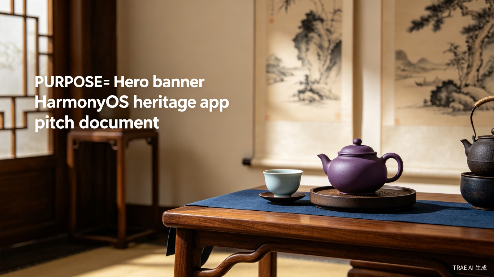
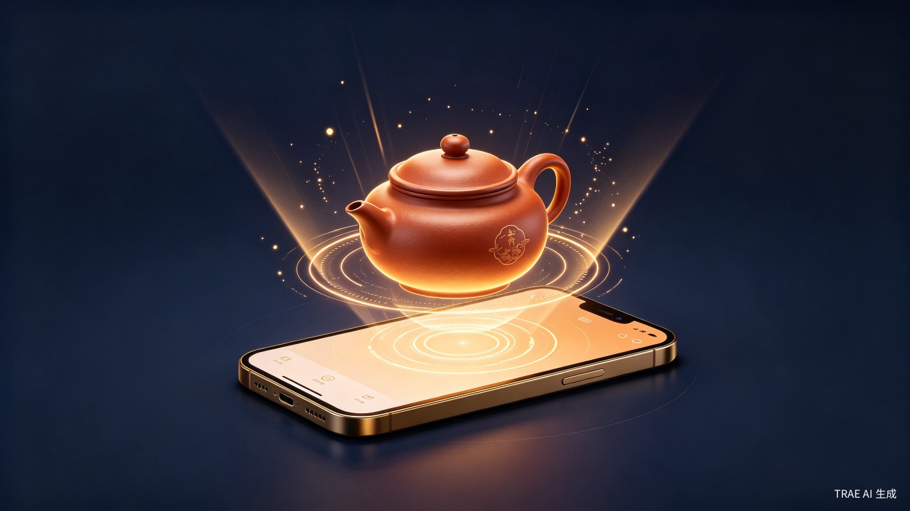
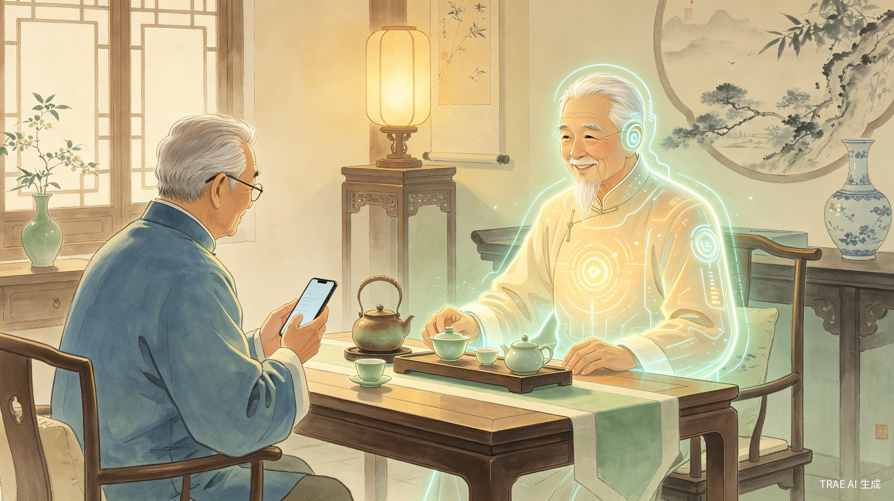
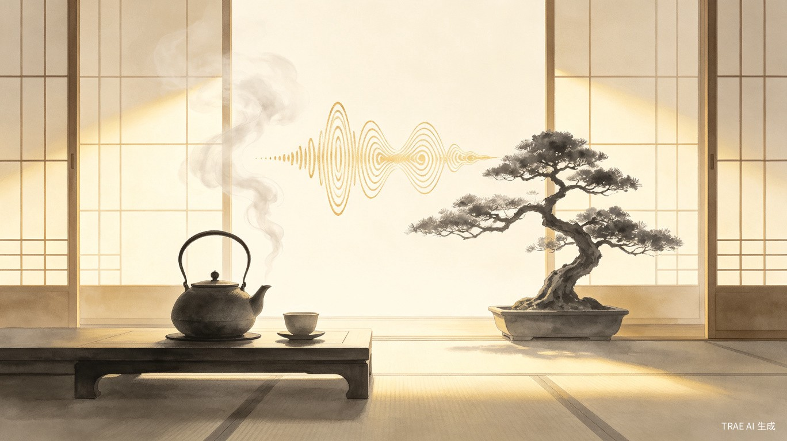
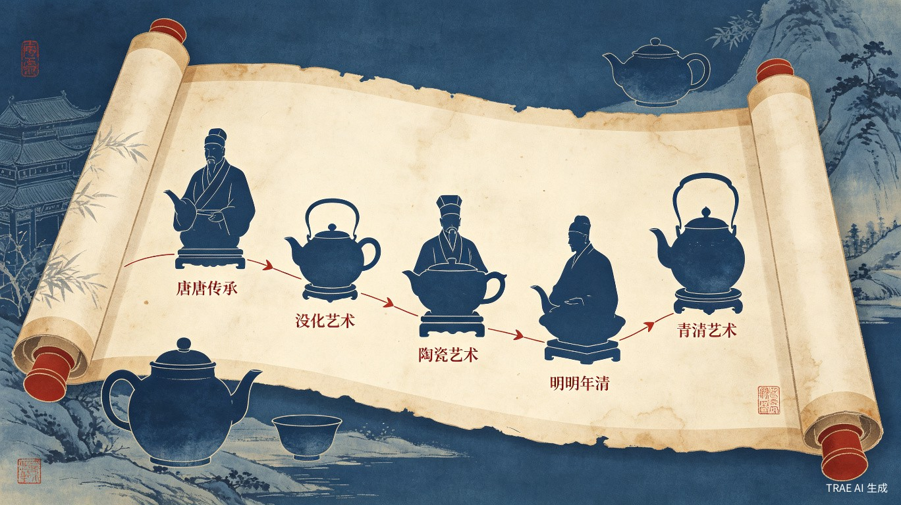
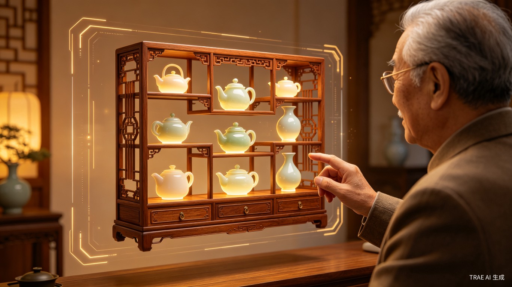

Tab 1：3D 沉浸式掌上把玩
利用鸿蒙 ArkGraphics 3D 引擎，1:1 还原顶级紫砂壶与名贵瓷器（汝窑、哥窑、官窑）。用户可通过手势实现 360 度自由旋转、双指微距放大，细察"冰裂纹"的开片走势或紫砂泥料的颗粒质感。
结合手机陀螺仪，模拟真实环境光线在釉面与壶身上的流转变化。配合华为高端机线性马达，在滑动与翻转时输出细腻的物理阻尼感与摩擦反馈，让银发用户产生真实的"盘玩"触觉记忆。

基于鸿蒙 NEXT 的非遗瓷器与紫砂鉴赏应用 —— 为银发族群打造的沉浸式器物文化伴侣
华为高端机用户画像清晰：商务人士、退休高干、企业家群体占据主力。他们普遍具备喝茶、盘玩器物、修身养性的生活习惯，对文化品位有较高追求，且拥有充裕的休闲时间与可支配收入。陶瓷与紫砂不仅具备极高的把玩价值和收藏价值，更与他们的日常生活场景 —— 茶室、书房 —— 高度契合。
本项目不考虑实现难度的前提下，充分利用 HarmonyOS NEXT 的顶级硬件能力，将 App 定位为银发族专属的"掌上数字茶室与器物鉴赏伴侣"，兼顾大赛评审标准与真实用户价值。
五大 Tab 各司其职，覆盖从感官体验到知识沉淀的完整闭环，确保功能丰富的同时保持界面简洁，完美满足鸿蒙应用上架审核要求。

利用鸿蒙 ArkGraphics 3D 引擎，1:1 还原顶级紫砂壶与名贵瓷器（汝窑、哥窑、官窑）。用户可通过手势实现 360 度自由旋转、双指微距放大，细察"冰裂纹"的开片走势或紫砂泥料的颗粒质感。
结合手机陀螺仪，模拟真实环境光线在釉面与壶身上的流转变化。配合华为高端机线性马达，在滑动与翻转时输出细腻的物理阻尼感与摩擦反馈，让银发用户产生真实的"盘玩"触觉记忆。

接入鸿蒙端侧大模型，打造一位懂行、说话温和的"老茶客"AI 伴侣。用户完全通过语音交互提问："这把紫砂壶适合泡什么茶？""汝窑开片正常吗？""怎么养壶才润？"
AI 基于本地权威知识库（RAG 架构）进行秒级专业解答，所有推理在端侧完成，无需联网亦可使用，既保护隐私又降低使用门槛。回答内容可一键转为语音播报，音色采用沉稳亲切的中老年男声，彻底解放双手与双眼。

提供高品质的非遗声音体验：煮水声（松风鸣）、古琴曲、越剧选段、雨落芭蕉。一键开启"沉浸式茶室模式"，屏幕切换为极简禅意动画，配合华为空间音频技术，营造出身临其境的茶室氛围。
此功能瞄准银发用户的休息与冥想场景，不追求信息密度，而以情绪抚慰为核心价值，成为每日泡茶仪式感的数字延伸。

以时间轴与长卷轴形式，系统展示紫砂七大老泥料的矿物特性、历代制壶名家的风格演变、五大名窑的烧造技艺差异。内容源自权威典籍与博物馆学术资料。
排版遵循银发友好原则：大字号、高对比度、竖版卷轴滑动，符合老年人阅读习惯。知识节点之间通过图谱关联，点击任一器物即可跳转至相关工艺、泥料或历史背景，形成可探索的文化网络。

记录用户把玩过的 3D 模型、收藏的鉴赏知识、与 AI 的对话历史。以虚拟博古架的形式可视化呈现个人收藏，支持按朝代、窑口、泥料分类浏览。
用户可将喜爱的 3D 器物截图或 AI 生成的茶室壁纸，一键分享至微信，满足长辈向亲友展示品位与学识的社交需求。分享卡片采用新中式美学设计，自带应用二维码，形成自然传播。
整体采用端侧优先架构，充分利用鸿蒙原生能力，确保在无网络环境下核心功能依然可用。
flowchart TB
subgraph 用户层["用户交互层"]
A1[语音输入]
A2[触屏手势]
A3[陀螺仪感应]
A4[线性马达反馈]
end
subgraph 应用层["HarmonyOS 应用层"]
B1[ArkUI 界面框架]
B2[ArkGraphics 3D 引擎]
B3[端侧 AI 推理引擎]
B4[音频播放与空间音频]
end
subgraph 数据层["本地数据层"]
C1[3D PBR 模型库]
C2[结构化 JSON 知识库]
C3[RAG 向量索引]
C4[白噪音音频库]
end
subgraph 服务层["云服务层（可选）"]
D1[3D 模型更新]
D2[知识库同步]
D3[社交分享接口]
end
A1 --> B3
A2 --> B1
A3 --> B2
B2 --> C1
B3 --> C2
B3 --> C3
B4 --> C4
C1 --> D1
C2 --> D2
B1 --> D3
数据质量决定文化类应用的专业可信度。本项目建立三层数据体系，确保内容的权威性与结构化。
对接《宜兴紫砂珍赏》《中国陶瓷史》《紫砂工艺》等经典著作的数字化内容，以及"中国非物质文化遗产网"紫砂/陶瓷专区资料。
构建包含泥料、器型、工艺、名家、冲泡指南五大维度的结构化 JSON 知识库，每条记录标注来源与可信度等级。
利用故宫博物院、宜兴陶瓷博物馆公开的高清文物影像与三维扫描数据，或采用 Sketchfab 等平台的 CC0 协议开源资产作为基础。
在本地进行 PBR（基于物理的渲染） 材质打磨，针对不同釉面（哑光、开片、油润）调整粗糙度与反射率参数，追求 museum-grade 还原度。
获取 Freesound 等开源平台的煮水声、古琴曲、环境白噪音；或接入鸿蒙系统级优质音频资源。
所有音频经过降噪与标准化处理，支持空间音频格式，确保在华为旗舰机的立体声扬声器与耳机下均有出色表现。
采用鸿蒙 TTS 引擎的中老年男声音色，语速设定为每分钟 180 字（低于常规 240 字），确保银发用户听清每一个专业术语。
对话语气经过 prompt 工程调校，融入"您""咱们""老话说"等亲切用语，避免机械感。
目标人群为 50 岁以上用户，设计必须将"无障碍"作为第一性原则，而非事后补救。
| 设计维度 | 常规应用标准 | 本应用银发标准 | 实现方式 |
|---|---|---|---|
| 正文字号 | 14–16 px | ≥ 18 px | ArkUI 动态字体缩放 |
| 按钮热区 | 44 x 44 dp | ≥ 56 x 56 dp | 自定义点击区域扩展 |
| 页面层级 | 3–4 层嵌套 | ≤ 2 层 | Tab 平铺 + 底部 sheet |
| 加载提示 | 转圈动画 | 进度条 + 文字说明 | Progress + Text 组合组件 |
| 语音交互 | 辅助功能 | 核心交互方式 | HarmonyOS 语音引擎 |
本项目在公益价值与商业可持续性之间找到平衡点，既满足大赛评审的立意高度，又预留清晰的盈利路径。
本应用完美契合 Trae 大赛的"智慧助老"与"非遗创新"双重公益赛道。以顶尖科技（鸿蒙 3D + 端侧 AI）解决银发族的精神文化需求，而非简单的"工具辅助"，立意层面具备显著差异化。
虽然 App 本体采用免费下载模式，但未来可无缝接入以下商业化模块：
在 3D 鉴赏页嵌入"同款器物"入口，对接宜兴紫砂工坊、景德镇名窑的官方旗舰店。用户看完一把壶的 3D 模型与 AI 评测后，自然产生购买意愿，转化路径极短。
对接全国高端非遗茶室、私人会所的预约系统。用户可在 App 内查看茶室环境、主人背景，并直接预约品茗体验，平台抽取佣金。
邀请国家级非遗传承人录制视频课程（如"顾景舟壶艺解析""汝窑天青釉烧制秘技"），采用单课购买或会员订阅模式。
推出限量数字藏品（如"虚拟名壶 NFT"）与年度会员服务（解锁全部 3D 模型、AI 无限对话、专属壁纸生成），满足高净值用户的收藏与身份表达需求。
从 MVP 到完整版，分三个阶段推进，确保每个迭代都有可验证的用户价值。
gantt
title 项目实施时间线
dateFormat YYYY-MM
section 第一阶段 MVP
3D 引擎选型与基础渲染 :a1, 2026-07, 2M
核心 3D 模型制作（5件） :a2, 2026-07, 3M
Tab 1 + Tab 4 基础版 :a3, 2026-08, 2M
section 第二阶段 核心版
端侧 AI 接入与 RAG 构建 :b1, 2026-10, 2M
Tab 2 AI 鉴赏管家 :b2, 2026-11, 2M
音频库与白噪音功能 :b3, 2026-11, 1M
Tab 3 茶室模式 :b4, 2026-12, 1M
section 第三阶段 完整版
用户系统与数字博古架 :c1, 2027-01, 2M
Tab 5 社交分享 :c2, 2027-02, 1M
银发 UX 专项优化 :c3, 2027-01, 2M
上架与种子用户运营 :c4, 2027-03, 1M
"掌上数字茶室"不仅仅是一款 App，它是一次技术人文主义的实践 —— 用鸿蒙 NEXT 最前沿的 3D 渲染与端侧 AI 能力，服务于最有文化积淀、最需要精神陪伴的银发群体。
在这个应用中，科技不是冰冷的代码堆砌，而是温润如玉的触觉反馈、是循循善诱的语音陪伴、是随手可触的文化长河。它让一位退休老人在午后茶室里，不必翻阅厚重的典籍，也能与顾景舟对话、与汝窑对视。
这正是 HarmonyOS NEXT 生态所期待的应用范式：以技术为器，以文化为魂，以用户为本。